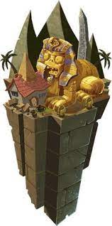

Los mundos en PvZ 2 son donde el jugador se desenvuelve mientras viaja con Dave y Penny. En cada uno puede conseguir una gran cantidad de plantas y zombies algunos más difíciles que otros y con sus propias habilidades. Mientras más mundos se desbloqueen, más difíciles se vuelven.
A continuación una tabla con información básica de cada mundo.
| Nombre | Dificultad | Niveles | Qué contiene | Imagen |
|---|---|---|---|---|
| Tutorial | N/A | 5 | Te enseñan a cómo iniciarte en el juego. | N/A |
| Antiguo Egipto | 2 Jalapeños | 25 (33 con expansión) | El primer mundo donde empezamos. Contiene tumbas y un ataque sorpresa (¡Tormenta de arena!). |  |
| Mares piratas | 2 Jalapeños | 25 (33 con expansión) | Puedes plantar sólo en la mitad izquierda del tablero y sólo puedes plantar en la derecha si hay tablones. Contiene un ataque sorpresa que se llama ¡Incursión! | |
| Salvaje Oeste | 3 Jalapeños | 25 (33 con expansión) | En este mundo puedes encontrarte con carros de mina que te permiten mover tus plantas por la columna y también cuídate de las gallinas ya que te pueden hacer perder si te descuidas. | |
| Cuevas congeladas | 3 Jalapeños | 30 | En este gélido mundo los vientos helados de la tundra congelarán a tus plantas además de contar con casillas para que los zombies cambien de carril. Cuídate de las comadrejas y ten a mano siempre alguna planta de fuego ya que si tus plantas se congelan éstas les pasarán por encima e irán directo a tu casa. Cuenta con un ataque sorpresa llamado ¡Tormenta de nieve! | |
| Ciudad perdida | 3 Jalapeños | 32 | Nos vamos a una ciudad antigua, probablemente en Centro o Sudamérica en donde encontraremos unas casillas especiales para conseguir soles extra pero también habrá casillas trampa que acabarán tanto con plantas como con zombies ya sea con una línea de fuego o con una roca gigante. Posee un ataque sorpresa llamado ¡Lluvia de paracaídas! | |
| Futuro lejano | 3 Jalapeños | 25 (33 con expansión) | Estamos en el año 2323, la tecnología ha avanzado tanto que los zombies ahora andan en robots. En este mundo encontrarás casillas potenciadoras que distribuirán el efecto de Nutrientes de la planta a todas las plantas que estén en la casilla con la misma figura. Este mundo cuenta con el ataque sorpresa ¡Enjambre de robots! | |
| Edad oscura | 4 Jalapeños | 20 | La edad oscura cuenta con la particularidad de que no cae sol del cielo pero contamos con setas que nos pueden ayudar en nuestra partida. Aquí encontrarás tumbas de las cuales a veces saldrán zombies en el ataque sorpresa ¡Nigromancia! | |
| Vueltacasete de neón | 4 Jalapeños | 32 | Llegamos a los 80s, una de las épocas más musicales de los últimos tiempos. Aquí los zombies mostrarán sus habilidades al ritmo de la música y a veces la cosa tendrá un toque romántico haciendo que tus plantas dejen de hacer sus funciones, solo pocas plantas son inmunes a este efecto. | |
| Pantano del Jurásico | 4 Jalapeños | 32 (40 con expansión) | Nos vamos a la época de los dinosaurios y estos sí que ayudarán a los zombies a llegar más rápido a tu casa pero por suerte tendremos a una planta para ponerlos en contra de los zombies. | |
| Playa de la gran ola | 5 Jalapeños | 32 | La playa es un buen lugar para pasar el rato pero no si está llena de zombies por todos lados, además ten cuidado de no plantar fuera de la línea de marea ya que tus plantas serán destruidas por el agua salada, por suerte tendremos Nenúfares para poder luchar contra esa marea. Cuenta con el ataque sorpresa ¡Marea baja!. | |
| Tiempos modernos | 5 Jalapeños | 34 (42 con expansión) | Llegamos donde comenzamos, en nuestra casa, con la única diferencia que ahora los zombies de todos los mundos estarán aquí para atacar en conjunto. Es el mundo más difícil y si no le sabes a la buena estrategia de seguro sufrirás en este mundo. |